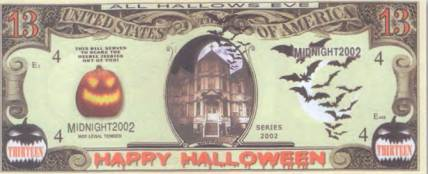
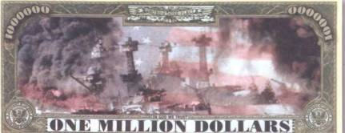
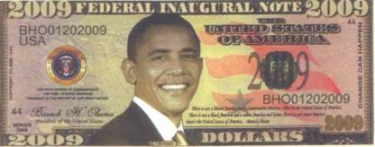
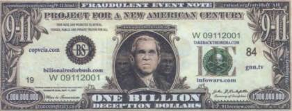

Тайны бумажных денег : Сувенирные банкноты

В последние годы в коллекциях бонистов по всему миру появилось множество занимательных и экстравагантных банкнот, которые в действительности не выпускались банками и никогда не были предназначены для денежного обращения. Это так называемые сувенирные деньги, по своему оформлению в основном подражающие американским долларам. Создают их частные фирмы и лица с одной-единственной целью — для коллекционеров. Номиналы у них самые разные, а по количеству пририсованных нолей они могут соперничать с китайскими «деньгами ада». Чаще всего можно встретить «купюры» в 1 млн долларов. Но есть и с совсем уж оригинальными номиналами в 4, 13, 66, 2001 доллар и даже в 1 млрд долларов. Нередко номинал этих ненастоящих денег имеет смысловую привязанность к изображенным на них сюжетам. Так, «банкнота» в 13 долларов посвящена Хеллоуину (рис. 97), а в 2001 доллар с повторяющимся набором цифр 911 — 11 сентября 2001 г., когда были атакованы американские башни-близнецы.


Некоторые сюжеты довольно незатейливы, другие, прямо сказать, вызывающе безвкусны, а третьи несут в себе достаточно глубокий патриотический смысл. Например, изображение на оборотной стороне боны в 1 млн долларов посвящено трагической судьбе американских военных моряков во время бомбардировки японцами 7 декабря 1941 г. Жемчужной бухты (Pearl Harbour) (рис. 98).
В той жуткой бойне Америка потеряла убитыми и ранеными 3581 военного. Потери среди гражданского населения составили 103 человека.
Ценность сувенирных долларовых банкнот для коллекционеров заключается в первую очередь в их эксклюзивности, потому как запечатленные на них рисунки едва ли когда-нибудь появятся на официальных банкнотах Соединенных Штатов Америки. Это государственное объединение известно своим консерватизмом в отношении национальной валюты и строго следит за тем, чтобы внешний вид банковских билетов оставался неизменным (современный вид, за некоторыми незначительными изменениями, и дизайн американские доллары имеют с 1928 г.).
Трудно представить, чтобы на национальных выпусках США появились и портреты других президентов, кроме уже имеющихся. Во-первых, их было уж слишком много, и на демонстрацию всех не хватило бы и десятка новых серий (настоящий американский президент Барак Обама — 44-й по счету). А во-вторых, едва ли президенты последних десятилетий заслужили честь быть увековеченными таким образом. Во всяком случае им никогда не сравниться ни с Вашингтоном, ни с Джефферсоном ни в количестве, ни в качестве достижений и свершений. А вот на сувенирных деньгах им, возможно, самое место. Туда, кстати, уже успели попасть и Клинтон с супругой, и Рональд Рейган, и Джордж Буш юниор, и даже Барак Обама (рис. 99).


При этом Буш помаленьку превращается в один из излюбленных мотивов этих игрушечных банкнот. То он изображен дружелюбно улыбающимся, не дать ни взять американский Санта-Клаус. А то этаким обиженным на весь мир большим ребенком с фашистской свастикой на галстучной заколке и в окружении своих ближайших советников — Дика Чейни и Дональда Рамсфельда. И подпись под рисунком соответствующая — интернациональные террористы! (рис. 100).